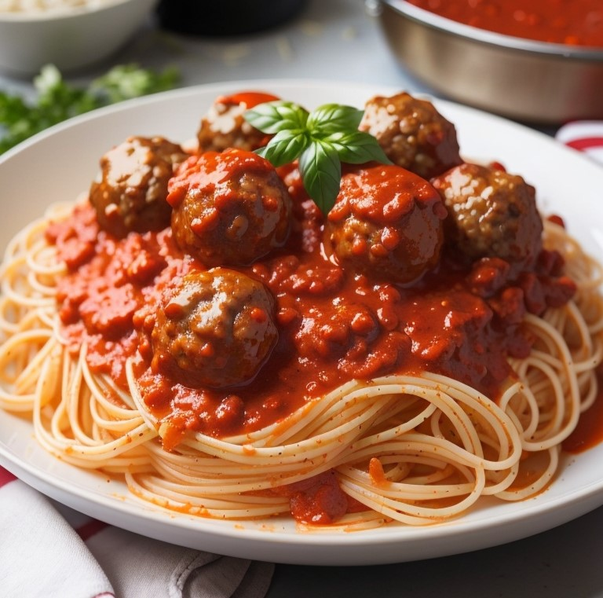

Meatball Spaghetti Recipe

Indulge in a classic comfort food with this delicious meatball spaghetti recipe. Tender homemade meatballs paired with flavorful tomato sauce and perfectly cooked spaghetti make for a satisfying and hearty meal.
Ingredients
For the Meatballs:
- 1 pound ground beef
- 1/2 cup breadcrumbs
- 1/4 cup grated Parmesan cheese
- 1/4 cup chopped fresh parsley
- 1/4 cup milk
- 1 egg
- 2 cloves garlic, minced
- 1 teaspoon dried oregano
- 1/2 teaspoon salt
- 1/4 teaspoon black pepper
For the Tomato Sauce:
- 1 tablespoon olive oil
- 1 small onion, finely chopped
- 2 cloves garlic, minced
- 1 can (28 ounces) crushed tomatoes
- 1 can (14 ounces) diced tomatoes
- 2 teaspoons dried basil
- 1 teaspoon dried oregano
- 1/2 teaspoon sugar
- Salt and pepper to taste
For the Spaghetti:
- 8 ounces spaghetti noodles
- Salt for cooking pasta
- Grated Parmesan cheese for serving
- Chopped fresh basil for garnish (optional)
Instructions
Meatballs:
- In a large bowl, combine all the meatball ingredients (ground beef, breadcrumbs, Parmesan cheese, parsley, milk, egg, minced garlic, dried oregano, salt, and black pepper).
- Mix the ingredients until well combined, but avoid overmixing, as it can result in tough meatballs.
- Shape the mixture into meatballs of your desired size (usually about 1-2 inches in diameter). Set them aside.
Tomato Sauce:
- Heat olive oil in a large saucepan over medium heat.
- Add the finely chopped onion and minced garlic to the pan. Sauté until the onion becomes translucent and the garlic is fragrant.
- Pour in the crushed tomatoes and diced tomatoes, including their juices.
- Stir in the dried basil, dried oregano, sugar, salt, and pepper.
- Bring the sauce to a simmer and let it cook for about 15-20 minutes, stirring occasionally.
Meatball Assembly:
- Gently place the meatballs into the simmering tomato sauce.
- Cover the saucepan and let the meatballs cook in the sauce for about 15-20 minutes, or until they are cooked through.
- Occasionally turn the meatballs to ensure even cooking and coat them with the sauce.
Spaghetti:
- While the meatballs are cooking, bring a large pot of salted water to a boil.
- Cook the spaghetti noodles according to the package instructions until al dente.
- Drain the cooked spaghetti and return it to the pot.
Serving:
- To serve, divide the cooked spaghetti among serving plates.
- Top the spaghetti with a generous ladle of tomato sauce and meatballs.
- Sprinkle grated Parmesan cheese over the top.
- Garnish with chopped fresh basil, if desired.
- Serve hot and enjoy!
Note: Feel free to adjust the seasoning and ingredients according to your taste preferences. You can also customize the recipe by adding your favorite vegetables or herbs to the tomato sauce.